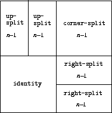
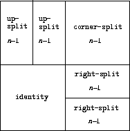

|
As we have seen, pairs provide a primitive “glue” that we can use to construct compound data objects. Figure 2.2 shows a standard way to visualize a pair – in this case, the pair formed by (cons 1 2). In this representation, which is called box-and-pointer notation, each object is shown as a pointer to a box. The box for a primitive object contains a representation of the object. For example, the box for a number contains a numeral. The box for a pair is actually a double box, the left part containing (a pointer to) the car of the pair and the right part containing the cdr.
We have already seen that cons can be used to combine not only numbers but pairs as well. (You made use of this fact, or should have, in doing exercises 2.2 and 2.3.) As a consequence, pairs provide a universal building block from which we can construct all sorts of data structures. Figure 2.3 shows two ways to use pairs to combine the numbers 1, 2, 3, and 4.
|
 |
The ability to create pairs whose elements are pairs is the essence of list structure's importance as a representational tool. We refer to this ability as the closure property of cons. In general, an operation for combining data objects satisfies the closure property if the results of combining things with that operation can themselves be combined using the same operation.6 Closure is the key to power in any means of combination because it permits us to create hierarchical structures – structures made up of parts, which themselves are made up of parts, and so on.
From the outset of chapter 1, we've made essential use of closure in dealing with procedures, because all but the very simplest programs rely on the fact that the elements of a combination can themselves be combinations. In this section, we take up the consequences of closure for compound data. We describe some conventional techniques for using pairs to represent sequences and trees, and we exhibit a graphics language that illustrates closure in a vivid way.7
 |
One of the useful structures we can build with pairs is a sequence – an ordered collection of data objects. There are, of course, many ways to represent sequences in terms of pairs. One particularly straightforward representation is illustrated in figure 2.4, where the sequence 1, 2, 3, 4 is represented as a chain of pairs. The car of each pair is the corresponding item in the chain, and the cdr of the pair is the next pair in the chain. The cdr of the final pair signals the end of the sequence by pointing to a distinguished value that is not a pair, represented in box-and-pointer diagrams as a diagonal line and in programs as the value of the variable nil. The entire sequence is constructed by nested cons operations:
(cons 1
(cons 2
(cons 3
(cons 4 nil))))
Such a sequence of pairs, formed by nested conses, is called a list, and Scheme provides a primitive called list to help in constructing lists.8 The above sequence could be produced by (list 1 2 3 4). In general,
(list <a1> <a2> ... <an>)
is equivalent to
(cons <a1> (cons <a2> (cons ... (cons <an> nil) ...)))
Lisp systems conventionally print lists by printing the sequence of elements, enclosed in parentheses. Thus, the data object in figure 2.4 is printed as (1 2 3 4):
(define one-through-four (list 1 2 3 4))
one-through-four
(1 2 3 4)
Be careful not to confuse the expression (list 1 2 3 4) with the list (1 2 3 4), which is the result obtained when the expression is evaluated. Attempting to evaluate the expression (1 2 3 4) will signal an error when the interpreter tries to apply the procedure 1 to arguments 2, 3, and 4.
We can think of car as selecting the first item in the list, and of cdr as selecting the sublist consisting of all but the first item. Nested applications of car and cdr can be used to extract the second, third, and subsequent items in the list.9 The constructor cons makes a list like the original one, but with an additional item at the beginning.
(car one-through-four)
1
(cdr one-through-four)
(2 3 4)
(car (cdr one-through-four))
2
(cons 10 one-through-four)
(10 1 2 3 4)
(cons 5 one-through-four)
(5 1 2 3 4)
The value of nil, used to terminate the chain of pairs, can be thought of as a sequence of no elements, the empty list. The word nil is a contraction of the Latin word nihil, which means “nothing.”10
The use of pairs to represent sequences of elements as lists is accompanied by conventional programming techniques for manipulating lists by successively “cdring down” the lists. For example, the procedure list-ref takes as arguments a list and a number n and returns the nth item of the list. It is customary to number the elements of the list beginning with 0. The method for computing list-ref is the following:
(define (list-ref items n)
(if (= n 0)
(car items)
(list-ref (cdr items) (- n 1))))
(define squares (list 1 4 9 16 25))
(list-ref squares 3)
16
Often we cdr down the whole list. To aid in this, Scheme includes a primitive predicate null?, which tests whether its argument is the empty list. The procedure length, which returns the number of items in a list, illustrates this typical pattern of use:
(define (length items)
(if (null? items)
0
(+ 1 (length (cdr items)))))
(define odds (list 1 3 5 7))
(length odds)
4
The length procedure implements a simple recursive plan. The reduction step is:
This is applied successively until we reach the base case:
We could also compute length in an iterative style:
(define (length items)
(define (length-iter a count)
(if (null? a)
count
(length-iter (cdr a) (+ 1 count))))
(length-iter items 0))
Another conventional programming technique is to “cons up” an answer list while cdring down a list, as in the procedure append, which takes two lists as arguments and combines their elements to make a new list:
(append squares odds)
(1 4 9 16 25 1 3 5 7)
(append odds squares)
(1 3 5 7 1 4 9 16 25)
Append is also implemented using a recursive plan. To append lists list1 and list2, do the following:
(define (append list1 list2)
(if (null? list1)
list2
(cons (car list1) (append (cdr list1) list2))))
Exercise 2.17. Define a procedure last-pair that returns the list that contains only the last element of a given (nonempty) list:
(last-pair (list 23 72 149 34))
(34)
Exercise 2.18. Define a procedure reverse that takes a list as argument and returns a list of the same elements in reverse order:
(reverse (list 1 4 9 16 25))
(25 16 9 4 1)
Exercise 2.19. Consider the change-counting program of section 1.2.2. It would be nice to be able to easily change the currency used by the program, so that we could compute the number of ways to change a British pound, for example. As the program is written, the knowledge of the currency is distributed partly into the procedure first-denomination and partly into the procedure count-change (which knows that there are five kinds of U.S. coins). It would be nicer to be able to supply a list of coins to be used for making change.
We want to rewrite the procedure cc so that its second argument is a list of the values of the coins to use rather than an integer specifying which coins to use. We could then have lists that defined each kind of currency:
(define us-coins (list 50 25 10 5 1))
(define uk-coins (list 100 50 20 10 5 2 1 0.5))
We could then call cc as follows:
(cc 100 us-coins)
292
To do this will require changing the program cc somewhat. It will still have the same form, but it will access its second argument differently, as follows:
(define (cc amount coin-values)
(cond ((= amount 0) 1)
((or (< amount 0) (no-more? coin-values)) 0)
(else
(+ (cc amount
(except-first-denomination coin-values))
(cc (- amount
(first-denomination coin-values))
coin-values)))))
Define the procedures first-denomination, except-first-denomination, and no-more? in terms of primitive operations on list structures. Does the order of the list coin-values affect the answer produced by cc? Why or why not?
Exercise 2.20. The procedures +, *, and list take arbitrary numbers of arguments. One way to define such procedures is to use define with dotted-tail notation. In a procedure definition, a parameter list that has a dot before the last parameter name indicates that, when the procedure is called, the initial parameters (if any) will have as values the initial arguments, as usual, but the final parameter's value will be a list of any remaining arguments. For instance, given the definition
(define (f x y . z) <body>)
the procedure f can be called with two or more arguments. If we evaluate
(f 1 2 3 4 5 6)
then in the body of f, x will be 1, y will be 2, and z will be the list (3 4 5 6). Given the definition
(define (g . w) <body>)
the procedure g can be called with zero or more arguments. If we evaluate
(g 1 2 3 4 5 6)
then in the body of g, w will be the list (1 2 3 4 5 6).11
Use this notation to write a procedure same-parity that takes one or more integers and returns a list of all the arguments that have the same even-odd parity as the first argument. For example,
(same-parity 1 2 3 4 5 6 7)
(1 3 5 7)
(same-parity 2 3 4 5 6 7)
(2 4 6)
One extremely useful operation is to apply some transformation to each element in a list and generate the list of results. For instance, the following procedure scales each number in a list by a given factor:
(define (scale-list items factor)
(if (null? items)
nil
(cons (* (car items) factor)
(scale-list (cdr items) factor))))
(scale-list (list 1 2 3 4 5) 10)
(10 20 30 40 50)
We can abstract this general idea and capture it as a common pattern expressed as a higher-order procedure, just as in section 1.3. The higher-order procedure here is called map. Map takes as arguments a procedure of one argument and a list, and returns a list of the results produced by applying the procedure to each element in the list:12
(define (map proc items)
(if (null? items)
nil
(cons (proc (car items))
(map proc (cdr items)))))
(map abs (list -10 2.5 -11.6 17))
(10 2.5 11.6 17)
(map (lambda (x) (* x x))
(list 1 2 3 4))
(1 4 9 16)
Now we can give a new definition of scale-list in terms of map:
(define (scale-list items factor)
(map (lambda (x) (* x factor))
items))
Map is an important construct, not only because it captures a common pattern, but because it establishes a higher level of abstraction in dealing with lists. In the original definition of scale-list, the recursive structure of the program draws attention to the element-by-element processing of the list. Defining scale-list in terms of map suppresses that level of detail and emphasizes that scaling transforms a list of elements to a list of results. The difference between the two definitions is not that the computer is performing a different process (it isn't) but that we think about the process differently. In effect, map helps establish an abstraction barrier that isolates the implementation of procedures that transform lists from the details of how the elements of the list are extracted and combined. Like the barriers shown in figure 2.1, this abstraction gives us the flexibility to change the low-level details of how sequences are implemented, while preserving the conceptual framework of operations that transform sequences to sequences. Section 2.2.3 expands on this use of sequences as a framework for organizing programs.
Exercise 2.21. The procedure square-list takes a list of numbers as argument and returns a list of the squares of those numbers.
(square-list (list 1 2 3 4))
(1 4 9 16)
Here are two different definitions of square-list. Complete both of them by filling in the missing expressions:
(define (square-list items)
(if (null? items)
nil
(cons <??> <??>)))
(define (square-list items)
(map <??> <??>))
Exercise 2.22. Louis Reasoner tries to rewrite the first square-list procedure of exercise 2.21 so that it evolves an iterative process:
(define (square-list items)
(define (iter things answer)
(if (null? things)
answer
(iter (cdr things)
(cons (square (car things))
answer))))
(iter items nil))
Unfortunately, defining square-list this way produces the answer list in the reverse order of the one desired. Why?
Louis then tries to fix his bug by interchanging the arguments to cons:
(define (square-list items)
(define (iter things answer)
(if (null? things)
answer
(iter (cdr things)
(cons answer
(square (car things))))))
(iter items nil))
This doesn't work either. Explain.
Exercise 2.23. The procedure for-each is similar to map. It takes as arguments a procedure and a list of elements. However, rather than forming a list of the results, for-each just applies the procedure to each of the elements in turn, from left to right. The values returned by applying the procedure to the elements are not used at all – for-each is used with procedures that perform an action, such as printing. For example,
(for-each (lambda (x) (newline) (display x))
(list 57 321 88))
57
321
88
The value returned by the call to for-each (not illustrated above) can be something arbitrary, such as true. Give an implementation of for-each.
The representation of sequences in terms of lists generalizes naturally to represent sequences whose elements may themselves be sequences. For example, we can regard the object ((1 2) 3 4) constructed by
(cons (list 1 2) (list 3 4))
as a list of three items, the first of which is itself a list, (1 2). Indeed, this is suggested by the form in which the result is printed by the interpreter. Figure 2.5 shows the representation of this structure in terms of pairs.
 |
Another way to think of sequences whose elements are sequences is as trees. The elements of the sequence are the branches of the tree, and elements that are themselves sequences are subtrees. Figure 2.6 shows the structure in figure 2.5 viewed as a tree.
 |
Recursion is a natural tool for dealing with tree structures, since we can often reduce operations on trees to operations on their branches, which reduce in turn to operations on the branches of the branches, and so on, until we reach the leaves of the tree. As an example, compare the length procedure of section 2.2.1 with the count-leaves procedure, which returns the total number of leaves of a tree:
(define x (cons (list 1 2) (list 3 4)))
(length x)
3
(count-leaves x)
4
(list x x)
(((1 2) 3 4) ((1 2) 3 4))
(length (list x x))
2
(count-leaves (list x x))
8
To implement count-leaves, recall the recursive plan for computing length:
Count-leaves is similar. The value for the empty list is the same:
But in the reduction step, where we strip off the car of the list, we must take into account that the car may itself be a tree whose leaves we need to count. Thus, the appropriate reduction step is
Finally, by taking cars we reach actual leaves, so we need another base case:
To aid in writing recursive procedures on trees, Scheme provides the primitive predicate pair?, which tests whether its argument is a pair. Here is the complete procedure:13
(define (count-leaves x)
(cond ((null? x) 0)
((not (pair? x)) 1)
(else (+ (count-leaves (car x))
(count-leaves (cdr x))))))
Exercise 2.24. Suppose we evaluate the expression (list 1 (list 2 (list 3 4))). Give the result printed by the interpreter, the corresponding box-and-pointer structure, and the interpretation of this as a tree (as in figure 2.6).
Exercise 2.25. Give combinations of cars and cdrs that will pick 7 from each of the following lists:
(1 3 (5 7) 9)
((7))
(1 (2 (3 (4 (5 (6 7))))))
Exercise 2.26. Suppose we define x and y to be two lists:
(define x (list 1 2 3))
(define y (list 4 5 6))
What result is printed by the interpreter in response to evaluating each of the following expressions:
(append x y)
(cons x y)
(list x y)
Exercise 2.27. Modify your reverse procedure of exercise 2.18 to produce a deep-reverse procedure that takes a list as argument and returns as its value the list with its elements reversed and with all sublists deep-reversed as well. For example,
(define x (list (list 1 2) (list 3 4)))
x
((1 2) (3 4))
(reverse x)
((3 4) (1 2))
(deep-reverse x)
((4 3) (2 1))
Exercise 2.28. Write a procedure fringe that takes as argument a tree (represented as a list) and returns a list whose elements are all the leaves of the tree arranged in left-to-right order. For example,
(define x (list (list 1 2) (list 3 4)))
(fringe x)
(1 2 3 4)
(fringe (list x x))
(1 2 3 4 1 2 3 4)
Exercise 2.29. A binary mobile consists of two branches, a left branch and a right branch. Each branch is a rod of a certain length, from which hangs either a weight or another binary mobile. We can represent a binary mobile using compound data by constructing it from two branches (for example, using list):
(define (make-mobile left right)
(list left right))
A branch is constructed from a length (which must be a number) together with a structure, which may be either a number (representing a simple weight) or another mobile:
(define (make-branch length structure)
(list length structure))
a. Write the corresponding selectors left-branch and right-branch, which return the branches of a mobile, and branch-length and branch-structure, which return the components of a branch.
b. Using your selectors, define a procedure total-weight that returns the total weight of a mobile.
c. A mobile is said to be balanced if the torque applied by its top-left branch is equal to that applied by its top-right branch (that is, if the length of the left rod multiplied by the weight hanging from that rod is equal to the corresponding product for the right side) and if each of the submobiles hanging off its branches is balanced. Design a predicate that tests whether a binary mobile is balanced.
d. Suppose we change the representation of mobiles so that the constructors are
(define (make-mobile left right)
(cons left right))
(define (make-branch length structure)
(cons length structure))
How much do you need to change your programs to convert to the new representation?
Just as map is a powerful abstraction for dealing with sequences, map together with recursion is a powerful abstraction for dealing with trees. For instance, the scale-tree procedure, analogous to scale-list of section 2.2.1, takes as arguments a numeric factor and a tree whose leaves are numbers. It returns a tree of the same shape, where each number is multiplied by the factor. The recursive plan for scale-tree is similar to the one for count-leaves:
(define (scale-tree tree factor)
(cond ((null? tree) nil)
((not (pair? tree)) (* tree factor))
(else (cons (scale-tree (car tree) factor)
(scale-tree (cdr tree) factor)))))
(scale-tree (list 1 (list 2 (list 3 4) 5) (list 6 7))
10)
(10 (20 (30 40) 50) (60 70))
Another way to implement scale-tree is to regard the tree as a sequence of sub-trees and use map. We map over the sequence, scaling each sub-tree in turn, and return the list of results. In the base case, where the tree is a leaf, we simply multiply by the factor:
(define (scale-tree tree factor)
(map (lambda (sub-tree)
(if (pair? sub-tree)
(scale-tree sub-tree factor)
(* sub-tree factor)))
tree))
Many tree operations can be implemented by similar combinations of sequence operations and recursion.
Exercise 2.30. Define a procedure square-tree analogous to the square-list procedure of exercise 2.21. That is, square-list should behave as follows:
(square-tree
(list 1
(list 2 (list 3 4) 5)
(list 6 7)))
(1 (4 (9 16) 25) (36 49))
Define square-tree both directly (i.e., without using any higher-order procedures) and also by using map and recursion.
Exercise 2.31. Abstract your answer to exercise 2.30 to produce a procedure tree-map with the property that square-tree could be defined as
(define (square-tree tree) (tree-map square tree))
Exercise 2.32. We can represent a set as a list of distinct elements, and we can represent the set of all subsets of the set as a list of lists. For example, if the set is (1 2 3), then the set of all subsets is (() (3) (2) (2 3) (1) (1 3) (1 2) (1 2 3)). Complete the following definition of a procedure that generates the set of subsets of a set and give a clear explanation of why it works:
(define (subsets s)
(if (null? s)
(list nil)
(let ((rest (subsets (cdr s))))
(append rest (map <??> rest)))))
In working with compound data, we've stressed how data abstraction permits us to design programs without becoming enmeshed in the details of data representations, and how abstraction preserves for us the flexibility to experiment with alternative representations. In this section, we introduce another powerful design principle for working with data structures – the use of conventional interfaces.
In section 1.3 we saw how program abstractions, implemented as higher-order procedures, can capture common patterns in programs that deal with numerical data. Our ability to formulate analogous operations for working with compound data depends crucially on the style in which we manipulate our data structures. Consider, for example, the following procedure, analogous to the count-leaves procedure of section 2.2.2, which takes a tree as argument and computes the sum of the squares of the leaves that are odd:
(define (sum-odd-squares tree)
(cond ((null? tree) 0)
((not (pair? tree))
(if (odd? tree) (square tree) 0))
(else (+ (sum-odd-squares (car tree))
(sum-odd-squares (cdr tree))))))
On the surface, this procedure is very different from the following one, which constructs a list of all the even Fibonacci numbers Fib(k), where k is less than or equal to a given integer n:
(define (even-fibs n)
(define (next k)
(if (> k n)
nil
(let ((f (fib k)))
(if (even? f)
(cons f (next (+ k 1)))
(next (+ k 1))))))
(next 0))
Despite the fact that these two procedures are structurally very different, a more abstract description of the two computations reveals a great deal of similarity. The first program
The second program
A signal-processing engineer would find it natural to conceptualize these processes in terms of signals flowing through a cascade of stages, each of which implements part of the program plan, as shown in figure 2.7. In sum-odd-squares, we begin with an enumerator, which generates a “signal” consisting of the leaves of a given tree. This signal is passed through a filter, which eliminates all but the odd elements. The resulting signal is in turn passed through a map, which is a “transducer” that applies the square procedure to each element. The output of the map is then fed to an accumulator, which combines the elements using +, starting from an initial 0. The plan for even-fibs is analogous.
 |
Unfortunately, the two procedure definitions above fail to exhibit this signal-flow structure. For instance, if we examine the sum-odd-squares procedure, we find that the enumeration is implemented partly by the null? and pair? tests and partly by the tree-recursive structure of the procedure. Similarly, the accumulation is found partly in the tests and partly in the addition used in the recursion. In general, there are no distinct parts of either procedure that correspond to the elements in the signal-flow description. Our two procedures decompose the computations in a different way, spreading the enumeration over the program and mingling it with the map, the filter, and the accumulation. If we could organize our programs to make the signal-flow structure manifest in the procedures we write, this would increase the conceptual clarity of the resulting code.
The key to organizing programs so as to more clearly reflect the signal-flow structure is to concentrate on the “signals” that flow from one stage in the process to the next. If we represent these signals as lists, then we can use list operations to implement the processing at each of the stages. For instance, we can implement the mapping stages of the signal-flow diagrams using the map procedure from section 2.2.1:
(map square (list 1 2 3 4 5))
(1 4 9 16 25)
Filtering a sequence to select only those elements that satisfy a given predicate is accomplished by
(define (filter predicate sequence)
(cond ((null? sequence) nil)
((predicate (car sequence))
(cons (car sequence)
(filter predicate (cdr sequence))))
(else (filter predicate (cdr sequence)))))
For example,
(filter odd? (list 1 2 3 4 5))
(1 3 5)
Accumulations can be implemented by
(define (accumulate op initial sequence)
(if (null? sequence)
initial
(op (car sequence)
(accumulate op initial (cdr sequence)))))
(accumulate + 0 (list 1 2 3 4 5))
15
(accumulate * 1 (list 1 2 3 4 5))
120
(accumulate cons nil (list 1 2 3 4 5))
(1 2 3 4 5)
All that remains to implement signal-flow diagrams is to enumerate the sequence of elements to be processed. For even-fibs, we need to generate the sequence of integers in a given range, which we can do as follows:
(define (enumerate-interval low high)
(if (> low high)
nil
(cons low (enumerate-interval (+ low 1) high))))
(enumerate-interval 2 7)
(2 3 4 5 6 7)
To enumerate the leaves of a tree, we can use14
(define (enumerate-tree tree)
(cond ((null? tree) nil)
((not (pair? tree)) (list tree))
(else (append (enumerate-tree (car tree))
(enumerate-tree (cdr tree))))))
(enumerate-tree (list 1 (list 2 (list 3 4)) 5))
(1 2 3 4 5)
Now we can reformulate sum-odd-squares and even-fibs as in the signal-flow diagrams. For sum-odd-squares, we enumerate the sequence of leaves of the tree, filter this to keep only the odd numbers in the sequence, square each element, and sum the results:
(define (sum-odd-squares tree)
(accumulate +
0
(map square
(filter odd?
(enumerate-tree tree)))))
For even-fibs, we enumerate the integers from 0 to n, generate the Fibonacci number for each of these integers, filter the resulting sequence to keep only the even elements, and accumulate the results into a list:
(define (even-fibs n)
(accumulate cons
nil
(filter even?
(map fib
(enumerate-interval 0 n)))))
The value of expressing programs as sequence operations is that this helps us make program designs that are modular, that is, designs that are constructed by combining relatively independent pieces. We can encourage modular design by providing a library of standard components together with a conventional interface for connecting the components in flexible ways.
Modular construction is a powerful strategy for controlling complexity in engineering design. In real signal-processing applications, for example, designers regularly build systems by cascading elements selected from standardized families of filters and transducers. Similarly, sequence operations provide a library of standard program elements that we can mix and match. For instance, we can reuse pieces from the sum-odd-squares and even-fibs procedures in a program that constructs a list of the squares of the first n + 1 Fibonacci numbers:
(define (list-fib-squares n)
(accumulate cons
nil
(map square
(map fib
(enumerate-interval 0 n)))))
(list-fib-squares 10)
(0 1 1 4 9 25 64 169 441 1156 3025)
We can rearrange the pieces and use them in computing the product of the odd integers in a sequence:
(define (product-of-squares-of-odd-elements sequence)
(accumulate *
1
(map square
(filter odd? sequence))))
(product-of-squares-of-odd-elements (list 1 2 3 4 5))
225
We can also formulate conventional data-processing applications in terms of sequence operations. Suppose we have a sequence of personnel records and we want to find the salary of the highest-paid programmer. Assume that we have a selector salary that returns the salary of a record, and a predicate programmer? that tests if a record is for a programmer. Then we can write
(define (salary-of-highest-paid-programmer records)
(accumulate max
0
(map salary
(filter programmer? records))))
These examples give just a hint of the vast range of operations that can be expressed as sequence operations.15
Sequences, implemented here as lists, serve as a conventional interface that permits us to combine processing modules. Additionally, when we uniformly represent structures as sequences, we have localized the data-structure dependencies in our programs to a small number of sequence operations. By changing these, we can experiment with alternative representations of sequences, while leaving the overall design of our programs intact. We will exploit this capability in section 3.5, when we generalize the sequence-processing paradigm to admit infinite sequences.
Exercise 2.33. Fill in the missing expressions to complete the following definitions of some basic list-manipulation operations as accumulations:
(define (map p sequence)
(accumulate (lambda (x y) <??>) nil sequence))
(define (append seq1 seq2)
(accumulate cons <??> <??>))
(define (length sequence)
(accumulate <??> 0 sequence))
Exercise 2.34. Evaluating a polynomial in x at a given value of x can be formulated as an accumulation. We evaluate the polynomial

using a well-known algorithm called Horner's rule, which structures the computation as

In other words, we start with an, multiply by x, add an-1, multiply by x, and so on, until we reach a0.16 Fill in the following template to produce a procedure that evaluates a polynomial using Horner's rule. Assume that the coefficients of the polynomial are arranged in a sequence, from a0 through an.
(define (horner-eval x coefficient-sequence)
(accumulate (lambda (this-coeff higher-terms) <??>)
0
coefficient-sequence))
For example, to compute 1 + 3x + 5x3 + x5 at x = 2 you would evaluate
(horner-eval 2 (list 1 3 0 5 0 1))
Exercise 2.35. Redefine count-leaves from section 2.2.2 as an accumulation:
(define (count-leaves t)
(accumulate <??> <??> (map <??> <??>)))
Exercise 2.36. The procedure accumulate-n is similar to accumulate except that it takes as its third argument a sequence of sequences, which are all assumed to have the same number of elements. It applies the designated accumulation procedure to combine all the first elements of the sequences, all the second elements of the sequences, and so on, and returns a sequence of the results. For instance, if s is a sequence containing four sequences, ((1 2 3) (4 5 6) (7 8 9) (10 11 12)), then the value of (accumulate-n + 0 s) should be the sequence (22 26 30). Fill in the missing expressions in the following definition of accumulate-n:
(define (accumulate-n op init seqs)
(if (null? (car seqs))
nil
(cons (accumulate op init <??>)
(accumulate-n op init <??>))))
Exercise 2.37. Suppose we represent vectors v = (vi) as sequences of numbers, and matrices m = (mij) as sequences of vectors (the rows of the matrix). For example, the matrix

is represented as the sequence ((1 2 3 4) (4 5 6 6) (6 7 8 9)). With this representation, we can use sequence operations to concisely express the basic matrix and vector operations. These operations (which are described in any book on matrix algebra) are the following:

We can define the dot product as17
(define (dot-product v w)
(accumulate + 0 (map * v w)))
Fill in the missing expressions in the following procedures for computing the other matrix operations. (The procedure accumulate-n is defined in exercise 2.36.)
(define (matrix-*-vector m v)
(map <??> m))
(define (transpose mat)
(accumulate-n <??> <??> mat))
(define (matrix-*-matrix m n)
(let ((cols (transpose n)))
(map <??> m)))
Exercise 2.38. The accumulate procedure is also known as fold-right, because it combines the first element of the sequence with the result of combining all the elements to the right. There is also a fold-left, which is similar to fold-right, except that it combines elements working in the opposite direction:
(define (fold-left op initial sequence)
(define (iter result rest)
(if (null? rest)
result
(iter (op result (car rest))
(cdr rest))))
(iter initial sequence))
What are the values of
(fold-right / 1 (list 1 2 3))
(fold-left / 1 (list 1 2 3))
(fold-right list nil (list 1 2 3))
(fold-left list nil (list 1 2 3))
Give a property that op should satisfy to guarantee that fold-right and fold-left will produce the same values for any sequence.
Exercise 2.39. Complete the following definitions of reverse (exercise 2.18) in terms of fold-right and fold-left from exercise 2.38:
(define (reverse sequence)
(fold-right (lambda (x y) <??>) nil sequence))
(define (reverse sequence)
(fold-left (lambda (x y) <??>) nil sequence))
We can extend the sequence paradigm to include many computations that are commonly expressed using nested loops.18 Consider this problem: Given a positive integer n, find all ordered pairs of distinct positive integers i and j, where 1< j< i< n, such that i + j is prime. For example, if n is 6, then the pairs are the following:

A natural way to organize this computation is to generate the sequence of all ordered pairs of positive integers less than or equal to n, filter to select those pairs whose sum is prime, and then, for each pair (i, j) that passes through the filter, produce the triple (i,j,i + j).
Here is a way to generate the sequence of pairs: For each integer i< n, enumerate the integers j<i, and for each such i and j generate the pair (i,j). In terms of sequence operations, we map along the sequence (enumerate-interval 1 n). For each i in this sequence, we map along the sequence (enumerate-interval 1 (- i 1)). For each j in this latter sequence, we generate the pair (list i j). This gives us a sequence of pairs for each i. Combining all the sequences for all the i (by accumulating with append) produces the required sequence of pairs:19
(accumulate append
nil
(map (lambda (i)
(map (lambda (j) (list i j))
(enumerate-interval 1 (- i 1))))
(enumerate-interval 1 n)))
The combination of mapping and accumulating with append is so common in this sort of program that we will isolate it as a separate procedure:
(define (flatmap proc seq)
(accumulate append nil (map proc seq)))
Now filter this sequence of pairs to find those whose sum is prime. The filter predicate is called for each element of the sequence; its argument is a pair and it must extract the integers from the pair. Thus, the predicate to apply to each element in the sequence is
(define (prime-sum? pair)
(prime? (+ (car pair) (cadr pair))))
Finally, generate the sequence of results by mapping over the filtered pairs using the following procedure, which constructs a triple consisting of the two elements of the pair along with their sum:
(define (make-pair-sum pair)
(list (car pair) (cadr pair) (+ (car pair) (cadr pair))))
Combining all these steps yields the complete procedure:
(define (prime-sum-pairs n)
(map make-pair-sum
(filter prime-sum?
(flatmap
(lambda (i)
(map (lambda (j) (list i j))
(enumerate-interval 1 (- i 1))))
(enumerate-interval 1 n)))))
Nested mappings are also useful for sequences other than those that enumerate intervals. Suppose we wish to generate all the permutations of a set S; that is, all the ways of ordering the items in the set. For instance, the permutations of {1,2,3} are {1,2,3}, { 1,3,2}, {2,1,3}, { 2,3,1}, { 3,1,2}, and { 3,2,1}. Here is a plan for generating the permutations of S: For each item x in S, recursively generate the sequence of permutations of S - x,20 and adjoin x to the front of each one. This yields, for each x in S, the sequence of permutations of S that begin with x. Combining these sequences for all x gives all the permutations of S:21
(define (permutations s)
(if (null? s) ; empty set?
(list nil) ; sequence containing empty set
(flatmap (lambda (x)
(map (lambda (p) (cons x p))
(permutations (remove x s))))
s)))
Notice how this strategy reduces the problem of generating permutations of S to the problem of generating the permutations of sets with fewer elements than S. In the terminal case, we work our way down to the empty list, which represents a set of no elements. For this, we generate (list nil), which is a sequence with one item, namely the set with no elements. The remove procedure used in permutations returns all the items in a given sequence except for a given item. This can be expressed as a simple filter:
(define (remove item sequence)
(filter (lambda (x) (not (= x item)))
sequence))
Exercise 2.40. Define a procedure unique-pairs that, given an integer n, generates the sequence of pairs (i,j) with 1< j< i< n. Use unique-pairs to simplify the definition of prime-sum-pairs given above.
Exercise 2.41. Write a procedure to find all ordered triples of distinct positive integers i, j, and k less than or equal to a given integer n that sum to a given integer s.
 |
The “eight-queens puzzle” asks how to place eight queens on a chessboard so that no queen is in check from any other (i.e., no two queens are in the same row, column, or diagonal). One possible solution is shown in figure 2.8. One way to solve the puzzle is to work across the board, placing a queen in each column. Once we have placed k - 1 queens, we must place the kth queen in a position where it does not check any of the queens already on the board. We can formulate this approach recursively: Assume that we have already generated the sequence of all possible ways to place k - 1 queens in the first k - 1 columns of the board. For each of these ways, generate an extended set of positions by placing a queen in each row of the kth column. Now filter these, keeping only the positions for which the queen in the kth column is safe with respect to the other queens. This produces the sequence of all ways to place k queens in the first k columns. By continuing this process, we will produce not only one solution, but all solutions to the puzzle.
We implement this solution as a procedure queens, which returns a sequence of all solutions to the problem of placing n queens on an n× n chessboard. Queens has an internal procedure queen-cols that returns the sequence of all ways to place queens in the first k columns of the board.
(define (queens board-size)
(define (queen-cols k)
(if (= k 0)
(list empty-board)
(filter
(lambda (positions) (safe? k positions))
(flatmap
(lambda (rest-of-queens)
(map (lambda (new-row)
(adjoin-position new-row k rest-of-queens))
(enumerate-interval 1 board-size)))
(queen-cols (- k 1))))))
(queen-cols board-size))
In this procedure rest-of-queens is a way to place k - 1 queens in the first k - 1 columns, and new-row is a proposed row in which to place the queen for the kth column. Complete the program by implementing the representation for sets of board positions, including the procedure adjoin-position, which adjoins a new row-column position to a set of positions, and empty-board, which represents an empty set of positions. You must also write the procedure safe?, which determines for a set of positions, whether the queen in the kth column is safe with respect to the others. (Note that we need only check whether the new queen is safe – the other queens are already guaranteed safe with respect to each other.)
Exercise 2.43. Louis Reasoner is having a terrible time doing exercise 2.42. His queens procedure seems to work, but it runs extremely slowly. (Louis never does manage to wait long enough for it to solve even the 6× 6 case.) When Louis asks Eva Lu Ator for help, she points out that he has interchanged the order of the nested mappings in the flatmap, writing it as
(flatmap
(lambda (new-row)
(map (lambda (rest-of-queens)
(adjoin-position new-row k rest-of-queens))
(queen-cols (- k 1))))
(enumerate-interval 1 board-size))
Explain why this interchange makes the program run slowly. Estimate how long it will take Louis's program to solve the eight-queens puzzle, assuming that the program in exercise 2.42 solves the puzzle in time T.
This section presents a simple language for drawing pictures that illustrates the power of data abstraction and closure, and also exploits higher-order procedures in an essential way. The language is designed to make it easy to experiment with patterns such as the ones in figure 2.9, which are composed of repeated elements that are shifted and scaled.22 In this language, the data objects being combined are represented as procedures rather than as list structure. Just as cons, which satisfies the closure property, allowed us to easily build arbitrarily complicated list structure, the operations in this language, which also satisfy the closure property, allow us to easily build arbitrarily complicated patterns.

 |
When we began our study of programming in section 1.1, we emphasized the importance of describing a language by focusing on the language's primitives, its means of combination, and its means of abstraction. We'll follow that framework here.
Part of the elegance of this picture language is that there is only one kind of element, called a painter. A painter draws an image that is shifted and scaled to fit within a designated parallelogram-shaped frame. For example, there's a primitive painter we'll call wave that makes a crude line drawing, as shown in figure 2.10. The actual shape of the drawing depends on the frame – all four images in figure 2.10 are produced by the same wave painter, but with respect to four different frames. Painters can be more elaborate than this: The primitive painter called rogers paints a picture of MIT's founder, William Barton Rogers, as shown in figure 2.11.23 The four images in figure 2.11 are drawn with respect to the same four frames as the wave images in figure 2.10.
To combine images, we use various operations that construct new painters from given painters. For example, the beside operation takes two painters and produces a new, compound painter that draws the first painter's image in the left half of the frame and the second painter's image in the right half of the frame. Similarly, below takes two painters and produces a compound painter that draws the first painter's image below the second painter's image. Some operations transform a single painter to produce a new painter. For example, flip-vert takes a painter and produces a painter that draws its image upside-down, and flip-horiz produces a painter that draws the original painter's image left-to-right reversed.

 
 |

 
 |
Figure 2.12 shows the drawing of a painter called wave4 that is built up in two stages starting from wave:
(define wave2 (beside wave (flip-vert wave)))
(define wave4 (below wave2 wave2))

 (define wave2 (define wave4
|
In building up a complex image in this manner we are exploiting the fact that painters are closed under the language's means of combination. The beside or below of two painters is itself a painter; therefore, we can use it as an element in making more complex painters. As with building up list structure using cons, the closure of our data under the means of combination is crucial to the ability to create complex structures while using only a few operations.
Once we can combine painters, we would like to be able to abstract typical patterns of combining painters. We will implement the painter operations as Scheme procedures. This means that we don't need a special abstraction mechanism in the picture language: Since the means of combination are ordinary Scheme procedures, we automatically have the capability to do anything with painter operations that we can do with procedures. For example, we can abstract the pattern in wave4 as
(define (flipped-pairs painter)
(let ((painter2 (beside painter (flip-vert painter))))
(below painter2 painter2)))
and define wave4 as an instance of this pattern:
(define wave4 (flipped-pairs wave))
We can also define recursive operations. Here's one that makes painters split and branch towards the right as shown in figures 2.13 and 2.14:
(define (right-split painter n)
(if (= n 0)
painter
(let ((smaller (right-split painter (- n 1))))
(beside painter (below smaller smaller)))))
 
 right-split n corner-split n
|
We can produce balanced patterns by branching upwards as well as towards the right (see exercise 2.44 and figures 2.13 and 2.14):
(define (corner-split painter n)
(if (= n 0)
painter
(let ((up (up-split painter (- n 1)))
(right (right-split painter (- n 1))))
(let ((top-left (beside up up))
(bottom-right (below right right))
(corner (corner-split painter (- n 1))))
(beside (below painter top-left)
(below bottom-right corner))))))

 (right-split wave 4) (right-split rogers 4)

 (corner-split wave 4) (corner-split rogers 4)
|
By placing four copies of a corner-split appropriately, we obtain a pattern called square-limit, whose application to wave and rogers is shown in figure 2.9:
(define (square-limit painter n)
(let ((quarter (corner-split painter n)))
(let ((half (beside (flip-horiz quarter) quarter)))
(below (flip-vert half) half))))
Exercise 2.44. Define the procedure up-split used by corner-split. It is similar to right-split, except that it switches the roles of below and beside.
In addition to abstracting patterns of combining painters, we can work at a higher level, abstracting patterns of combining painter operations. That is, we can view the painter operations as elements to manipulate and can write means of combination for these elements – procedures that take painter operations as arguments and create new painter operations.
For example, flipped-pairs and square-limit each arrange four copies of a painter's image in a square pattern; they differ only in how they orient the copies. One way to abstract this pattern of painter combination is with the following procedure, which takes four one-argument painter operations and produces a painter operation that transforms a given painter with those four operations and arranges the results in a square. Tl, tr, bl, and br are the transformations to apply to the top left copy, the top right copy, the bottom left copy, and the bottom right copy, respectively.
(define (square-of-four tl tr bl br)
(lambda (painter)
(let ((top (beside (tl painter) (tr painter)))
(bottom (beside (bl painter) (br painter))))
(below bottom top))))
Then flipped-pairs can be defined in terms of square-of-four as follows:24
(define (flipped-pairs painter)
(let ((combine4 (square-of-four identity flip-vert
identity flip-vert)))
(combine4 painter)))
and square-limit can be expressed as25
(define (square-limit painter n)
(let ((combine4 (square-of-four flip-horiz identity
rotate180 flip-vert)))
(combine4 (corner-split painter n))))
Exercise 2.45. Right-split and up-split can be expressed as instances of a general splitting operation. Define a procedure split with the property that evaluating
(define right-split (split beside below))
(define up-split (split below beside))
produces procedures right-split and up-split with the same behaviors as the ones already defined.
Before we can show how to implement painters and their means of combination, we must first consider frames. A frame can be described by three vectors – an origin vector and two edge vectors. The origin vector specifies the offset of the frame's origin from some absolute origin in the plane, and the edge vectors specify the offsets of the frame's corners from its origin. If the edges are perpendicular, the frame will be rectangular. Otherwise the frame will be a more general parallelogram.
Figure 2.15 shows a frame and its associated vectors. In accordance with data abstraction, we need not be specific yet about how frames are represented, other than to say that there is a constructor make-frame, which takes three vectors and produces a frame, and three corresponding selectors origin-frame, edge1-frame, and edge2-frame (see exercise 2.47).
 |
We will use coordinates in the unit square (0< x,y< 1) to specify images. With each frame, we associate a frame coordinate map, which will be used to shift and scale images to fit the frame. The map transforms the unit square into the frame by mapping the vector v = (x,y) to the vector sum

For example, (0,0) is mapped to the origin of the frame, (1,1) to the vertex diagonally opposite the origin, and (0.5,0.5) to the center of the frame. We can create a frame's coordinate map with the following procedure:26
(define (frame-coord-map frame)
(lambda (v)
(add-vect
(origin-frame frame)
(add-vect (scale-vect (xcor-vect v)
(edge1-frame frame))
(scale-vect (ycor-vect v)
(edge2-frame frame))))))
Observe that applying frame-coord-map to a frame returns a procedure that, given a vector, returns a vector. If the argument vector is in the unit square, the result vector will be in the frame. For example,
((frame-coord-map a-frame) (make-vect 0 0))
returns the same vector as
(origin-frame a-frame)
Exercise 2.46. A two-dimensional vector v running from the origin to a point can be represented as a pair consisting of an x-coordinate and a y-coordinate. Implement a data abstraction for vectors by giving a constructor make-vect and corresponding selectors xcor-vect and ycor-vect. In terms of your selectors and constructor, implement procedures add-vect, sub-vect, and scale-vect that perform the operations vector addition, vector subtraction, and multiplying a vector by a scalar:

Exercise 2.47. Here are two possible constructors for frames:
(define (make-frame origin edge1 edge2)
(list origin edge1 edge2))
(define (make-frame origin edge1 edge2)
(cons origin (cons edge1 edge2)))
For each constructor supply the appropriate selectors to produce an implementation for frames.
A painter is represented as a procedure that, given a frame as argument, draws a particular image shifted and scaled to fit the frame. That is to say, if p is a painter and f is a frame, then we produce p's image in f by calling p with f as argument.
The details of how primitive painters are implemented depend on the particular characteristics of the graphics system and the type of image to be drawn. For instance, suppose we have a procedure draw-line that draws a line on the screen between two specified points. Then we can create painters for line drawings, such as the wave painter in figure 2.10, from lists of line segments as follows:27
(define (segments->painter segment-list)
(lambda (frame)
(for-each
(lambda (segment)
(draw-line
((frame-coord-map frame) (start-segment segment))
((frame-coord-map frame) (end-segment segment))))
segment-list)))
The segments are given using coordinates with respect to the unit square. For each segment in the list, the painter transforms the segment endpoints with the frame coordinate map and draws a line between the transformed points.
Representing painters as procedures erects a powerful abstraction barrier in the picture language. We can create and intermix all sorts of primitive painters, based on a variety of graphics capabilities. The details of their implementation do not matter. Any procedure can serve as a painter, provided that it takes a frame as argument and draws something scaled to fit the frame.28
Exercise 2.48. A directed line segment in the plane can be represented as a pair of vectors – the vector running from the origin to the start-point of the segment, and the vector running from the origin to the end-point of the segment. Use your vector representation from exercise 2.46 to define a representation for segments with a constructor make-segment and selectors start-segment and end-segment.
Exercise 2.49. Use segments->painter to define the following primitive painters:
a. The painter that draws the outline of the designated frame.
b. The painter that draws an “X” by connecting opposite corners of the frame.
c. The painter that draws a diamond shape by connecting the midpoints of the sides of the frame.
d. The wave painter.
An operation on painters (such as flip-vert or beside) works by creating a painter that invokes the original painters with respect to frames derived from the argument frame. Thus, for example, flip-vert doesn't have to know how a painter works in order to flip it – it just has to know how to turn a frame upside down: The flipped painter just uses the original painter, but in the inverted frame.
Painter operations are based on the procedure transform-painter, which takes as arguments a painter and information on how to transform a frame and produces a new painter. The transformed painter, when called on a frame, transforms the frame and calls the original painter on the transformed frame. The arguments to transform-painter are points (represented as vectors) that specify the corners of the new frame: When mapped into the frame, the first point specifies the new frame's origin and the other two specify the ends of its edge vectors. Thus, arguments within the unit square specify a frame contained within the original frame.
(define (transform-painter painter origin corner1 corner2)
(lambda (frame)
(let ((m (frame-coord-map frame)))
(let ((new-origin (m origin)))
(painter
(make-frame new-origin
(sub-vect (m corner1) new-origin)
(sub-vect (m corner2) new-origin)))))))
Here's how to flip painter images vertically:
(define (flip-vert painter)
(transform-painter painter
(make-vect 0.0 1.0) ; new origin
(make-vect 1.0 1.0) ; new end of edge1
(make-vect 0.0 0.0))) ; new end of edge2
Using transform-painter, we can easily define new transformations. For example, we can define a painter that shrinks its image to the upper-right quarter of the frame it is given:
(define (shrink-to-upper-right painter)
(transform-painter painter
(make-vect 0.5 0.5)
(make-vect 1.0 0.5)
(make-vect 0.5 1.0)))
Other transformations rotate images counterclockwise by 90 degrees29
(define (rotate90 painter)
(transform-painter painter
(make-vect 1.0 0.0)
(make-vect 1.0 1.0)
(make-vect 0.0 0.0)))
or squash images towards the center of the frame:30
(define (squash-inwards painter)
(transform-painter painter
(make-vect 0.0 0.0)
(make-vect 0.65 0.35)
(make-vect 0.35 0.65)))
Frame transformation is also the key to defining means of combining two or more painters. The beside procedure, for example, takes two painters, transforms them to paint in the left and right halves of an argument frame respectively, and produces a new, compound painter. When the compound painter is given a frame, it calls the first transformed painter to paint in the left half of the frame and calls the second transformed painter to paint in the right half of the frame:
(define (beside painter1 painter2)
(let ((split-point (make-vect 0.5 0.0)))
(let ((paint-left
(transform-painter painter1
(make-vect 0.0 0.0)
split-point
(make-vect 0.0 1.0)))
(paint-right
(transform-painter painter2
split-point
(make-vect 1.0 0.0)
(make-vect 0.5 1.0))))
(lambda (frame)
(paint-left frame)
(paint-right frame)))))
Observe how the painter data abstraction, and in particular the representation of painters as procedures, makes beside easy to implement. The beside procedure need not know anything about the details of the component painters other than that each painter will draw something in its designated frame.
Exercise 2.50. Define the transformation flip-horiz, which flips painters horizontally, and transformations that rotate painters counterclockwise by 180 degrees and 270 degrees.
Exercise 2.51. Define the below operation for painters. Below takes two painters as arguments. The resulting painter, given a frame, draws with the first painter in the bottom of the frame and with the second painter in the top. Define below in two different ways – first by writing a procedure that is analogous to the beside procedure given above, and again in terms of beside and suitable rotation operations (from exercise 2.50).
The picture language exercises some of the critical ideas we've introduced about abstraction with procedures and data. The fundamental data abstractions, painters, are implemented using procedural representations, which enables the language to handle different basic drawing capabilities in a uniform way. The means of combination satisfy the closure property, which permits us to easily build up complex designs. Finally, all the tools for abstracting procedures are available to us for abstracting means of combination for painters.
We have also obtained a glimpse of another crucial idea about languages and program design. This is the approach of stratified design, the notion that a complex system should be structured as a sequence of levels that are described using a sequence of languages. Each level is constructed by combining parts that are regarded as primitive at that level, and the parts constructed at each level are used as primitives at the next level. The language used at each level of a stratified design has primitives, means of combination, and means of abstraction appropriate to that level of detail.
Stratified design pervades the engineering of complex systems. For example, in computer engineering, resistors and transistors are combined (and described using a language of analog circuits) to produce parts such as and-gates and or-gates, which form the primitives of a language for digital-circuit design.31 These parts are combined to build processors, bus structures, and memory systems, which are in turn combined to form computers, using languages appropriate to computer architecture. Computers are combined to form distributed systems, using languages appropriate for describing network interconnections, and so on.
As a tiny example of stratification, our picture language uses primitive elements (primitive painters) that are created using a language that specifies points and lines to provide the lists of line segments for segments->painter, or the shading details for a painter like rogers. The bulk of our description of the picture language focused on combining these primitives, using geometric combiners such as beside and below. We also worked at a higher level, regarding beside and below as primitives to be manipulated in a language whose operations, such as square-of-four, capture common patterns of combining geometric combiners.
Stratified design helps make programs robust, that is, it makes it likely that small changes in a specification will require correspondingly small changes in the program. For instance, suppose we wanted to change the image based on wave shown in figure 2.9. We could work at the lowest level to change the detailed appearance of the wave element; we could work at the middle level to change the way corner-split replicates the wave; we could work at the highest level to change how square-limit arranges the four copies of the corner. In general, each level of a stratified design provides a different vocabulary for expressing the characteristics of the system, and a different kind of ability to change it.
Exercise 2.52. Make changes to the square limit of wave shown in figure 2.9 by working at each of the levels described above. In particular:
a. Add some segments to the primitive wave painter of exercise 2.49 (to add a smile, for example).
b. Change the pattern constructed by corner-split (for example, by using only one copy of the up-split and right-split images instead of two).
c. Modify the version of square-limit that uses square-of-four so as to assemble the corners in a different pattern. (For example, you might make the big Mr. Rogers look outward from each corner of the square.)
6 The use of the word “closure” here comes from abstract algebra, where a set of elements is said to be closed under an operation if applying the operation to elements in the set produces an element that is again an element of the set. The Lisp community also (unfortunately) uses the word “closure” to describe a totally unrelated concept: A closure is an implementation technique for representing procedures with free variables. We do not use the word “closure” in this second sense in this book.
7 The notion that a means of combination should satisfy closure is a straightforward idea. Unfortunately, the data combiners provided in many popular programming languages do not satisfy closure, or make closure cumbersome to exploit. In Fortran or Basic, one typically combines data elements by assembling them into arrays – but one cannot form arrays whose elements are themselves arrays. Pascal and C admit structures whose elements are structures. However, this requires that the programmer manipulate pointers explicitly, and adhere to the restriction that each field of a structure can contain only elements of a prespecified form. Unlike Lisp with its pairs, these languages have no built-in general-purpose glue that makes it easy to manipulate compound data in a uniform way. This limitation lies behind Alan Perlis's comment in his foreword to this book: “In Pascal the plethora of declarable data structures induces a specialization within functions that inhibits and penalizes casual cooperation. It is better to have 100 functions operate on one data structure than to have 10 functions operate on 10 data structures.”
8 In this book, we use list to mean a chain of pairs terminated by the end-of-list marker. In contrast, the term list structure refers to any data structure made out of pairs, not just to lists.
9 Since nested applications of car and cdr are cumbersome to write, Lisp dialects provide abbreviations for them – for instance,

The names of all such procedures start with c and end with r. Each a between them stands for a car operation and each d for a cdr operation, to be applied in the same order in which they appear in the name. The names car and cdr persist because simple combinations like cadr are pronounceable.
10 It's remarkable how much energy in the standardization of Lisp dialects has been dissipated in arguments that are literally over nothing: Should nil be an ordinary name? Should the value of nil be a symbol? Should it be a list? Should it be a pair? In Scheme, nil is an ordinary name, which we use in this section as a variable whose value is the end-of-list marker (just as true is an ordinary variable that has a true value). Other dialects of Lisp, including Common Lisp, treat nil as a special symbol. The authors of this book, who have endured too many language standardization brawls, would like to avoid the entire issue. Once we have introduced quotation in section 2.3, we will denote the empty list as '() and dispense with the variable nil entirely.
11 To define f and g using lambda we would write
(define f (lambda (x y . z) <body>))
(define g (lambda w <body>))
12 Scheme standardly provides a map procedure that is more general than the one described here. This more general map takes a procedure of n arguments, together with n lists, and applies the procedure to all the first elements of the lists, all the second elements of the lists, and so on, returning a list of the results. For example:
(map + (list 1 2 3) (list 40 50 60) (list 700 800 900))
(741 852 963)
(map (lambda (x y) (+ x (* 2 y)))
(list 1 2 3)
(list 4 5 6))
(9 12 15)
13 The order of the first two clauses in the cond matters, since the empty list satisfies null? and also is not a pair.
14 This is, in fact, precisely the fringe procedure from exercise 2.28. Here we've renamed it to emphasize that it is part of a family of general sequence-manipulation procedures.
15 Richard Waters (1979) developed a program that automatically analyzes traditional Fortran programs, viewing them in terms of maps, filters, and accumulations. He found that fully 90 percent of the code in the Fortran Scientific Subroutine Package fits neatly into this paradigm. One of the reasons for the success of Lisp as a programming language is that lists provide a standard medium for expressing ordered collections so that they can be manipulated using higher-order operations. The programming language APL owes much of its power and appeal to a similar choice. In APL all data are represented as arrays, and there is a universal and convenient set of generic operators for all sorts of array operations.
16 According to Knuth (1981), this rule was formulated by W. G. Horner early in the nineteenth century, but the method was actually used by Newton over a hundred years earlier. Horner's rule evaluates the polynomial using fewer additions and multiplications than does the straightforward method of first computing anxn, then adding an-1xn-1, and so on. In fact, it is possible to prove that any algorithm for evaluating arbitrary polynomials must use at least as many additions and multiplications as does Horner's rule, and thus Horner's rule is an optimal algorithm for polynomial evaluation. This was proved (for the number of additions) by A. M. Ostrowski in a 1954 paper that essentially founded the modern study of optimal algorithms. The analogous statement for multiplications was proved by V. Y. Pan in 1966. The book by Borodin and Munro (1975) provides an overview of these and other results about optimal algorithms.
17 This definition uses the extended version of map described in footnote 12.
18 This approach to nested mappings was shown to us by David Turner, whose languages KRC and Miranda provide elegant formalisms for dealing with these constructs. The examples in this section (see also exercise 2.42) are adapted from Turner 1981. In section 3.5.3, we'll see how this approach generalizes to infinite sequences.
19 We're representing a pair here as a list of two elements rather than as a Lisp pair. Thus, the “pair” (i,j) is represented as (list i j), not (cons i j).
20 The set S - x is the set of all elements of S, excluding x.
21 Semicolons in Scheme code are used to introduce comments. Everything from the semicolon to the end of the line is ignored by the interpreter. In this book we don't use many comments; we try to make our programs self-documenting by using descriptive names.
22 The picture language is based on the language Peter Henderson created to construct images like M.C. Escher's “Square Limit” woodcut (see Henderson 1982). The woodcut incorporates a repeated scaled pattern, similar to the arrangements drawn using the square-limit procedure in this section.
23 William Barton Rogers (1804-1882) was the founder and first president of MIT. A geologist and talented teacher, he taught at William and Mary College and at the University of Virginia. In 1859 he moved to Boston, where he had more time for research, worked on a plan for establishing a “polytechnic institute,” and served as Massachusetts's first State Inspector of Gas Meters.
When MIT was established in 1861, Rogers was elected its first president. Rogers espoused an ideal of “useful learning” that was different from the university education of the time, with its overemphasis on the classics, which, as he wrote, “stand in the way of the broader, higher and more practical instruction and discipline of the natural and social sciences.” This education was likewise to be different from narrow trade-school education. In Rogers's words:
The world-enforced distinction between the practical and the scientific worker is utterly futile, and the whole experience of modern times has demonstrated its utter worthlessness.
Rogers served as president of MIT until 1870, when he resigned due to ill health. In 1878 the second president of MIT, John Runkle, resigned under the pressure of a financial crisis brought on by the Panic of 1873 and strain of fighting off attempts by Harvard to take over MIT. Rogers returned to hold the office of president until 1881.
Rogers collapsed and died while addressing MIT's graduating class at the commencement exercises of 1882. Runkle quoted Rogers's last words in a memorial address delivered that same year:
In the words of Francis A. Walker (MIT's third president):“As I stand here today and see what the Institute is, ... I call to mind the beginnings of science. I remember one hundred and fifty years ago Stephen Hales published a pamphlet on the subject of illuminating gas, in which he stated that his researches had demonstrated that 128 grains of bituminous coal – ”
“Bituminous coal,” these were his last words on earth. Here he bent forward, as if consulting some notes on the table before him, then slowly regaining an erect position, threw up his hands, and was translated from the scene of his earthly labors and triumphs to “the tomorrow of death,” where the mysteries of life are solved, and the disembodied spirit finds unending satisfaction in contemplating the new and still unfathomable mysteries of the infinite future.
All his life he had borne himself most faithfully and heroically, and he died as so good a knight would surely have wished, in harness, at his post, and in the very part and act of public duty.
24 Equivalently, we could write
(define flipped-pairs
(square-of-four identity flip-vert identity flip-vert))
25 Rotate180 rotates a painter by 180 degrees (see exercise 2.50). Instead of rotate180 we could say (compose flip-vert flip-horiz), using the compose procedure from exercise 1.42.
26 Frame-coord-map uses the vector operations described in exercise 2.46 below, which we assume have been implemented using some representation for vectors. Because of data abstraction, it doesn't matter what this vector representation is, so long as the vector operations behave correctly.
27 Segments->painter uses the representation for line segments described in exercise 2.48 below. It also uses the for-each procedure described in exercise 2.23.
28 For example, the rogers painter of figure 2.11 was constructed from a gray-level image. For each point in a given frame, the rogers painter determines the point in the image that is mapped to it under the frame coordinate map, and shades it accordingly. By allowing different types of painters, we are capitalizing on the abstract data idea discussed in section 2.1.3, where we argued that a rational-number representation could be anything at all that satisfies an appropriate condition. Here we're using the fact that a painter can be implemented in any way at all, so long as it draws something in the designated frame. Section 2.1.3 also showed how pairs could be implemented as procedures. Painters are our second example of a procedural representation for data.
29 Rotate90 is a pure rotation only for square frames, because it also stretches and shrinks the image to fit into the rotated frame.
30 The diamond-shaped images in figures 2.10 and 2.11 were created with squash-inwards applied to wave and rogers.